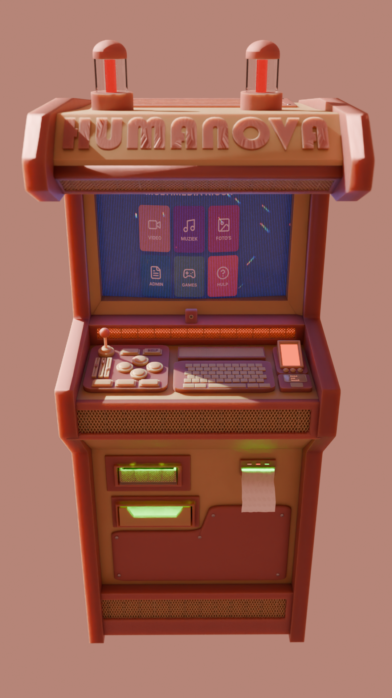
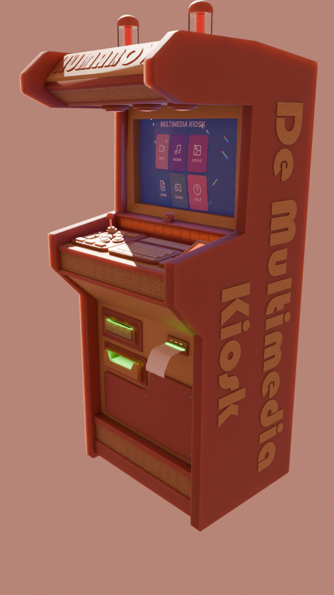
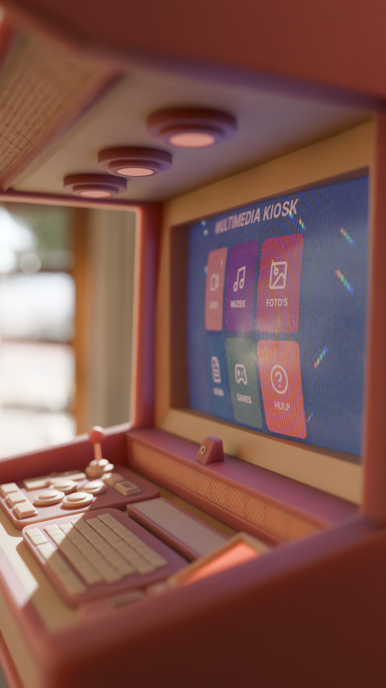

Multimedia Kiosk
Voor een fictief project moesten we een oplossing vinden voor ouderen die eenzaamheid ervaren en digitaal niet goed mee zijn. Ik besloot in Blender een kiosk te modelleren die hierbij helpt met vereenvoudigde toepassingen, zoals video, muziek, foto's, games en een hulpknop.
- Rol
- modelleren, materialen, UI-ontwerp, compositie en renderen
- Tools
- Blender, Figma, Unity
- Resultaat
- een gedetailleerd 3D-model van een concept, en veel bijgeleerd over modeling in Blender.